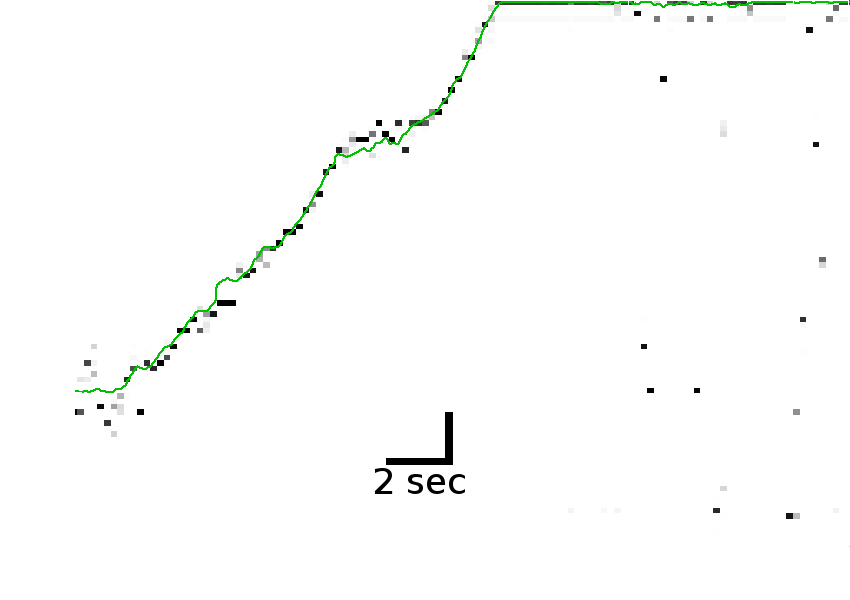

Code at:
Goal: A tool to sumarize the firing of many place cells
Decoding (black) matches position (green)
Decoding (black) matches position (green)
Decoding (black) matches position (green)
Given realtime replay detection:
| 0. Acquire spikes, pos | → FTP files to MATLAB after experiment |
| 1. Cluster-cutting | → After the fact, by human |
| 2. Filter by speed | → No problem |
| 3. Compute place fields | → Serial, takes time ∝ to #spikes |
| 4. Bayesian decode | → Serial |
| 0. Acquire spikes, pos | → Network to Haskell for analysis |
| 1. Cluster-cutting | → Manual? Semi-automated? Clusterless? |
| 2. Filter by speed | → No problem |
| 3. Compute place fields | → Stream-friendly model - parallel over (32) tetrodes |
| 4. Bayesian decode | → Very concurrent |